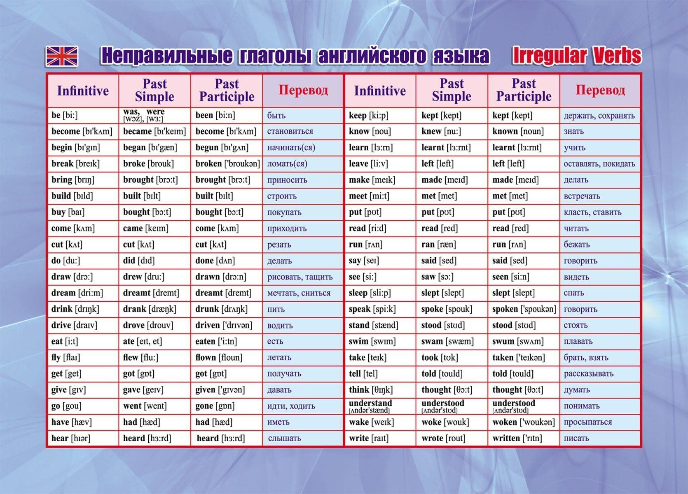

Знакомство и разбор
Есть очевидная связь с настоящим, можно логически или реально подставить какое-то слово-указатель из перечисленных ниже
| Подлежащее | have | has |
|---|---|---|
| I / you / we / they | ✓ | |
| he / she / it | ✓ |
В вопросе переносим have / has в начало; в отрицании добавляем not после вспомогательного глагола
После have / has ставим причастие прошедшего времени:
Never уже отрицает действие — не ставьте рядом not (двойное отрицание):
У односложных глаголов и у двусложных с ударением на последнем слоге удваиваем финальную согласную перед -ed:
Примеры:
She has вспомогательный глагол finish ed окончание -ed her homework.
We have вспомогательный глагол finish ed окончание -ed our work.
I have вспомогательный глагол seen неправильная форма (see → seen) this film.
Эти слова часто сопровождают Present Perfect:
